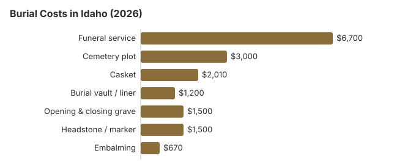

Burial Costs in Idaho (2026)
Our Idaho burial estimate is $14,910 to $19,410 with cemetery charges included. Roughly $6,700 of that is the funeral home's service, and the cemetery's plot, liner and grave opening add about $5,700 more. Below we break out each charge, explain Idaho's permit rule for moving a grave, what a county will pay under Idaho Code § 31-3412, and where Idaho veterans can be buried at no cost.
Line-by-Line Idaho Burial Prices
| Piece of the burial | Idaho average | Spread |
|---|---|---|
| Funeral service | $6,700 | $5,025 – $8,710 |
| Cemetery plot | $3,000 | $1,500 – $6,000 |
| Casket | $2,010 | $670 – $5,360 |
| Burial vault / liner | $1,200 | $800 – $10,000 |
| Opening & closing grave | $1,500 | $500 – $3,000 |
| Headstone / marker | $1,500 | $500 – $5,000+ |
| Embalming | $670 | $500 – $1,500 |
How we got the Idaho numbers: they are model estimates, not a canvass of Idaho funeral homes or cemeteries, and they are no substitute for a quote or professional advice. Read about the model in our method and its limits in the disclaimer.

Idaho burials land between $14,910 and $19,410 on our figures with every cemetery fee in, and the casket and marker you choose move it most.
Keeping an Idaho Burial Affordable
What an Idaho family can do about the cost:
- Ask cemeteries for a fee sheet. The FTC Funeral Rule covers the funeral home, not the cemetery, so request the Idaho cemetery's plot, opening and marker charges in writing.
- Plan for a winter death. Where the ground freezes, an Idaho cemetery may keep the casket in a receiving vault until spring; ask what that holding costs.
- Try the cemetery district. Many rural Idaho cemeteries are run by public maintenance districts funded by a small property levy, and their lot prices are set by the district board, so ask the district for its rates.
- Check before a private burial. A burial on family land still needs the permit and must meet county rules; our home funeral guide covers the paperwork.
Winter Deaths and Spring Burials in Idaho
A casket held in a receiving vault is not counted as disinterred until it has been there more than 30 days, which matters when a family waits for spring. Ask the cemetery what the vault costs per month and whether the funeral home's quote includes a second trip, since the grave opening is then done months after the service.
Burial Resources
- Funeral Consumers AllianceNonprofit consumer advocacy for funeral pricing
- Headstone & Monument GuideCosts, types, and buying tips
- Green Burial OptionsEco-friendly and natural alternatives
- Best Online Casket RetailersCaskets bought online often cost less
- Best Burial InsuranceCompare plans to cover burial expenses
Compare Funeral Costs
- Average Funeral Cost in 2026National cost breakdown with real prices
- Cremation vs. Burial Cost ComparisonSide-by-side price comparison to help you decide
- Funeral Cost BreakdownEvery line item explained: know what you're paying for
- Cheapest Funeral OptionsLower-cost alternatives, with typical price ranges
- Direct Cremation: Most Affordable OptionNFDA 2023 median $2,645 with a family-supplied container (latest available)
- How to Compare Funeral PricesStep-by-step guide to getting the best price
Idaho Burial Types
Frequently Asked Questions
What is the usual Idaho burial total?
About $14,910 to $19,410 on this site's estimates, and it helps to see it as two bills. The funeral home's share is the service at about $6,700 plus a casket around $2,010 if you buy it there. The cemetery's share is the plot (about $3,000), the vault or liner (about $1,200) and opening and closing the grave (about $1,500). The marker, $500 to $5,000, usually comes from a monument dealer.
For context, NFDA's 2023 national median for a funeral with viewing and burial was $8,300 before any cemetery charges. Idaho's funeral homes are licensed by the Division of Occupational and Professional Licenses (208-334-3233).
Will an Idaho cemetery want a vault?
Idaho law does not demand one, but a cemetery's own rules often do, to keep the ground level. Ask whether a plain concrete liner, which costs less than a sealed vault, meets the rule.
What lowers an Idaho burial bill?
Choosing direct burial removes the embalming, viewing and ceremony charges from the bill, and is usually the cheapest burial an Idaho funeral home lists. A casket from another seller can be used with no handling fee under the FTC Funeral Rule, and eligible veterans pay nothing for the grave, liner or marker at Snake River Canyon.
Why do Idaho cemetery prices vary?
Each cemetery sets its own fees, whether it is a private memorial park, a church ground or a public district, and a district's levy funding (Idaho Code § 27-121) can keep its prices low. Compare written fee sheets before buying.
Idaho burial, every charge included: how much?
Counting it all: service $6,700, plot $3,000, casket $2,010, vault $1,200, grave opening $1,500 and a $500 to $5,000 headstone, which is $14,910 to $19,410 for Idaho before cash advance items like death certificates.
Does Idaho have natural burial?
Green burial sections, meaning a biodegradable container with no embalming and no vault, are becoming more common at Idaho cemeteries, and the total usually comes in below a traditional burial; where none is close, some families buy a traditional plot and simply skip embalming. Many rural Idaho cemeteries are run by public districts. Idaho Code §27-101 declares cemetery upkeep a public purpose, and §27-121 lets a cemetery maintenance district levy up to 0.04% of taxable market value, which helps keep district plot prices low.
More for Idaho
Idaho's rules for moving a burial
In Idaho, no body may be disinterred without a permit from the state registrar of vital statistics. A licensed mortician must personally supervise, and the application has to come from the person or persons with the highest authority over the remains under Idaho Code § 54-1142. Only the people actually needed may be present. The person with authority may attend or send a designee. The coffin may not be opened at either end of the move without a special permit from the registrar (Idaho Code § 39-269; checked October 29, 2026).
A body that a mortician has prepared and placed in a receiving vault, often over winter when the ground is frozen, is not treated as disinterred until it has been there more than 30 days. That can matter to families planning a spring burial.
Who regulates Idaho burials, and county help
The Idaho Division of Occupational and Professional Licenses (208-334-3233) licenses morticians and funeral homes and takes complaints. A cemetery may be run by a district, a town, a church or a company, so ask who answers for the one you choose.
The Funeral Consumers Alliance lists nine states that require a funeral director, and Idaho is not one of them, so a family can deal with the cemetery directly on the plot, the opening and the container.
The burial can go ahead once the permit is issued. For cremation, Idaho has no waiting period, but the county coroner must authorize it in writing (IDAPA 24.08.01.100; Idaho Code § 39-268).
County help
The county commissioners must provide a burial or cremation for an indigent person who dies in the county, paid only up to the county's set or negotiated rate; if nobody claims the body within 14 days, the coroner makes the arrangements (Idaho Code § 31-3412). Ask what the rate pays for before you buy a plot. Social Security's $255 goes to a qualifying spouse or child and does not come close to the $3,000 plot estimate.
Veterans
Snake River Canyon National Cemetery (208-732-7499) and the state veterans cemeteries at Blackfoot (208-701-7161) and Boise (208-780-1340) bury eligible veterans with the grave, opening, liner and headstone at no charge (source: VA National Cemetery Administration).
Idaho burial steps
- Get fee sheets from two cemeteries and price lists from two funeral homes.
- Ask whether you may buy the headstone from a monument dealer.
- If the county may pay, ask the commissioners whether their rate includes the opening.
- For a veteran, check eligibility with Snake River Canyon or a state cemetery before buying a private plot.
- Report misleading prices to the Division at 208-334-3233; the call costs nothing.